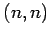
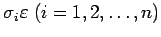
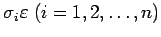

Inhalt Index DeskTop Bronstein

 Dynamische Systeme und Chaos Quantitative Beschreibung von Attraktoren Lyapunov-Exponenten
Dynamische Systeme und Chaos Quantitative Beschreibung von Attraktoren Lyapunov-Exponenten


Sei L eine beliebige Matrix vom Typ . Die Singulärwerte von L sind die nichtnegativen Wurzeln der Eigenwerte der positiv semidefiniten Matrix . Die Eigenwerte  sind, ihrer Vielfachheit entsprechend, angeführt.
sind, ihrer Vielfachheit entsprechend, angeführt.
Die Singulärwerte lassen sich geometrisch interpretieren. Ist eine Kugel mit Mittelpunkt in 0 und Radius  , so ist das Bild ein Ellipsoid mit den Halbachsenlängen  (s. Abbildung).
, so ist das Bild ein Ellipsoid mit den Halbachsenlängen  (s. Abbildung).